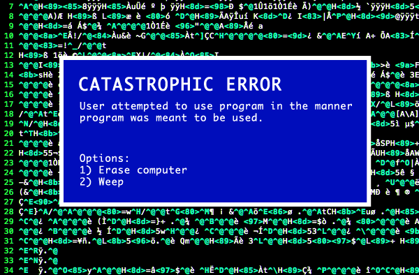
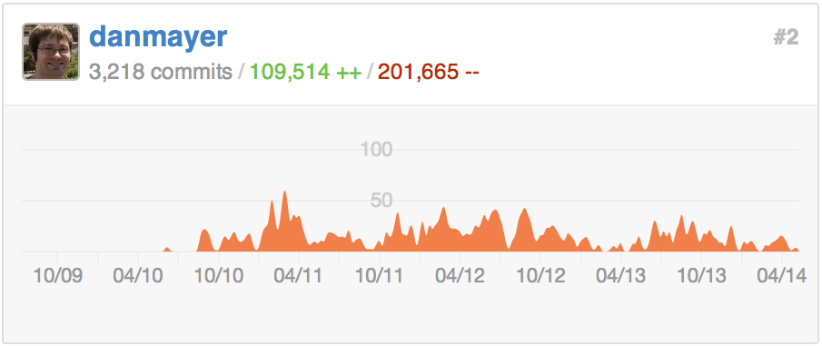
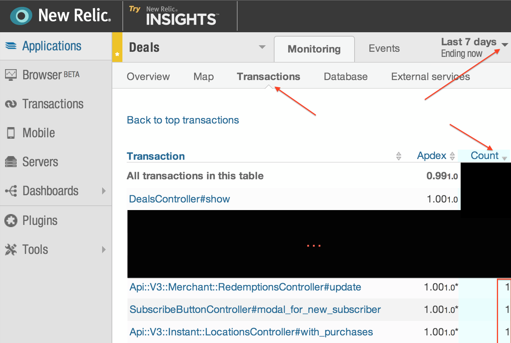
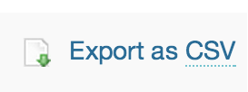

Spaghetti Code
We have all seen spaghetti code. It is hard to understand and
follow all the code paths. It is difficult to change and
maintain.
As projects grow and age it is very difficult to entirely
avoid. Untangling it is hard but code analysis can help.
First I want to briefly explain
how a project can reach a point where there is over 200KLOC that
can be removed. Then I can explain some processes to help find
and remove unnecessary complexity.
MonoRail
-
Pre Existing
The application began as a fork of an existing project to
quickly validate an idea.
-
Consumer
That grew into a consumer business, which is what most
people know as LivingSocial today.
That app grew a lot and had many teams working to extend its
functionality.
Eventually it was forked into multiple other applications.
-
This means all these apps share some of the same
code, but after each split they have less responsibility.
Which code is needed for the smaller slice of responsibilities, what
can be removed from the parent or app?
-
If you keep going like this without ever cleaning up the apps
no longer necessary code. You will eventually crash.
Looking production runtime can help tell you.
(images obviously taken from the Simpsons)
Yes, we have a MonoRail app. A very large app that has grown
for years.
Actually we have more than one, how did we get here. A bit of
history.
How Dead Code Sticks Around
-
Large teams aren't good at communicating what is no
longer needed (both Biz & Dev)
- A/B tests, never removing a loser
- One offs that are irrelevant over time
- Deprecation of old endpoints takes time
- Refactoring leaves dead code paths behind
- A dev making a 'safe' & creating new methods
opposed to altering existing methods with multiple callers
- There are tests, but it is never used in production
- etc...
Beyond Monorails, dead code can slip into a system many
ways.
I am not really going into all the details, but suffice to
say. Every system I have worked on grows and at some point has
unnecessary code tucked away into the corners at some
point.
Features that don't quite justify their UI complexity,
pivoting away from some direction, either for business or
development reasons.
All code is bad

Also, the bridge was designed as a suspension bridge, but nobody actually knew how to build a suspension bridge, so they got halfway through it and then just added extra support columns to keep the thing standing
Peter Welch (Programming Still Sucks)
Their is a pretty hilarious article titled "programming still
sucks" by Peter Welch, recently making it around the net.
In it he makes the analogy of a team
building a bridge, not knowing what they are doing building half
suspension and half support bride.
In the article he jokingly states, "all code is bad". That
must mean...
Less Code Is Better
- is easier to reason about
- is easier to upgrade (Rails, Ruby, and Gem versions)
- is easier to refactor
- is easier to adapt to new requirements
- means there are less and faster tests
...Less code is better. Obviously if the code is doing work it has some value,
but I don't think I have to spend much time time on why having less code
& simpler systems is better.
Solution: Clean Up Dead Code
- If "All Code is Bad"
- Less Code is Better
- Keep Only the Code Needed, No More
So if the problem is all code is bad and we agree less code is better, the
solution is clean up dead code. Keeping only the code need.
We can make our projects better by only working what we
need. The code that is actively adding value to our
business and users.
Sounds good, let's delete all the code... Or some of it, which code...
All code is bad
They left the suspension cables because they're still sort
of holding up parts of the bridge. Nobody knows which parts, but
everybody's pretty sure they're important parts.
Peter Welch (Programming Still Sucks)
In the article the bridge analogy continues, explaining why the
team left the suspension cables up after switching to a support
column bridge.
How to know: Production Code Analysis
Nobody knows which parts, but everybody's pretty sure they're important parts.
Peter Welch (Programming Still Sucks)
What really caught my attention in the article was this
specific line.
Nobody knows which parts.
We don't have to settle for guessing, we can solve this
problem... We can use data.
Analyzing Production Code
Hopefully that explains a bit about how one can end up in a
place where they need data to help them know what is going on
with their systems.
I am going to go through some examples of processes we have
used to find unused code. From very simple methods, to more
complicated processes. Also, note if you run `rake stats` on a
Rail app and have less than 3-5K lines of application code. You
can probably just reason about all this in your head pretty
easily and some of these tools might seem like overkill. We had
apps pushing 80K lines of app code, excluding view layer,
JS, CSS.
Street Cred

(grown up marketing speak: "street cred" => "social
proof")
Just to show that this isn't some idea, these are processes we
have been able to put into practice. Here is my history on one
of our Monorails apps. I am pretty proud to have removed
nearly 2 lines of code for every one added, while delivery
additional functionality and faster performance.
Team Effort
[~/projects/deals]git log --numstat --pretty="%H" --author="dan.mayer" --since="2 years ago" app | awk 'NF==3 {plus+=$1; minus+=$2} END {printf("+%d, -%d\n", plus, minus)}'
+20973, -47034
[~/projects/deals] git log --numstat --pretty="%H" --since="2 years ago" app | awk 'NF==3 {plus+=$1; minus+=$2} END {printf("+%d, -%d\n", plus, minus)}'
+197326, -215514
Also, wanted to point out getting code bases into shape. Is
really a team effort. As a team we celebrate our code
improvements. Pointing out and cheering on particularly good commits, faster tests,
code deletion.
Linking to little victories in campfire all the
way.
Using 3rd Party tool (NewRelic)
Easiest way, look transactions over last 7 days: (note won't
help with specific formats or never hit endpoints)

One of the easiest ways to gain insight into what code is
being used in production is checking with any of the 3rd party
performance monitoring tools.
In this case NewRelic but I am
sure Skylight.io and Traceview can get you the same data. In
this view you can sort transactions broken down by controller
route by usage. Anything with 1 view in the last seven days likely isn't pulling its
weight. It might be worth discussing the cost of those features
with the business team.
This view also doesn't show you what received 0 requests.
Using 3rd Party tool (NewRelic)
LS made a gem to help,
newrelic_route_check
compare NR reports to Rails routes.
download the `controller_summary.csv`

run `bundle exec rake newrelic:compare_with_routes`
found 335 uniq new relic controller action hits
found 562 uniq Rails routes controller action pairs
exists in new relic, but not in routes: 0
never accessed in new relic stats: ***
Pipeline::DealsController#show
Pipeline::EmailTemplatesController#show
SubscribeButtonController#dropdown_for_deal
...
AuthorizationRulesController#graph
AuthorizationRulesController#change
I created a gem to make this easy to check. You can download
the CSV of NR transactions and it can compare it to your Rails
routes. Finding any routes you have which are never hit.
Running this on old production apps always seems to find some long
forgotten routes.
Stats Instrumentation
- No NewRelic: No Problem
- Background Events Executed: All events being triggered?
- Emails Sent: Are you still sending all your mailers?
- Views Rendered: partials, templates, and layouts
- One Off Trackers: usage of code
branches & other hard to verify code
- Production Performance Comparisons: What's faster on
production data
- Translations Usage: How many translation keys are you
loading in memory & never using
Custom Stats instrumentation is very flexible. We are going to
look at a number of techniques to gain insight into what your
application is actually doing in production.
Stats Instrumentation: Tools
#shared code for examples
STATSD= Statsd.new('stat.my.us', PORT).tap{|sd| sd.namespace = 'app_name'}
REDIS = Redis::Namespace.new(:app_name, :redis => Redis.new)
We use a number of tools for custom stats, that I wanted to
quickly mention.
I wanted to give a shout out to Etsy here, as we rely heavily on StatsD, and they
have shared in great detail how they also use metrics to gain
all sorts of code and business insights.
StatsD is also extremely performant and while it can be lossy,
we haven't ever run into performance issues while adding many metrics.
Also, quickly here is some shared constants that will appear in
several of the examples. Internally we have wrappers around
our Redis and StatsD usage to deal with things like app name
spacing, common error handling, configurations, etc.
In these examples I am just using Redis and StatsD directly.
No NewRelic, No Problem
thanks Jeff
Whitmire
class ApplicationController < ActionController::Base
before_filter :track_controller_traffic
around_filter :track_controller_timing
def endpoint_name
"#{params['controller'].gsub('/','.')}.#{params['action']}"
end
def track_controller_traffic
STATSD.increment "traffic.total"
STATSD.increment "traffic.#{endpoint_name}"
end
def track_controller_timing
STATSD.time("timing.#{endpoint_name}") do
yield
end
end
First up, not using NewRelic or another performance tool? No
problem.
We have a couple of ways we have added tracking on endpoints
and timing in Rails. I think the simplest and cleanest example
was done by
Jeff
Whitmire. Obviously 3rd party performance monitors give you a
lot more details than this, but this lets you collect basic usage
and performance stats. Make it easy to See what is being used or
to configure alerts based on percentile performance changes.
Background Events Executed
# Example for Resque background jobs
def before_perform(*args)
STATSD.increment "resque.processed.#{get_event_name}"
end
def after_perform(*args)
STATSD.increment "resque.completed.#{get_event_name}"
end
If you run a sizable Rails app you likely run background
jobs.
Some jobs will come and go over time. It is pretty easy to
remove code that queues a job, while leaving around the job code and
related methods. It is easy to instrument how often something is
processed, completed. With a bit more work you can record execution time around jobs or
success/failures on completion.
This is a simple example assuming Resque, but is pretty similar for all queueing frameworks.
Emails Sent
# Example for ActionMailer
class BaseMailer < ActionMailer::Base
def initialize(method_name=nil, *parameters)
STATSD.increment "mailers.base_mailer.#{method_name}" if method_name
#...
super(method_name, *parameters)
end
end
Mailers like background jobs and come and go. Stating every
mailer as it is sent lets you know when a mailer is no longer
needed.
Or perhaps which mailers you should spend more time
improving based on the send volume. This is a simple example of hooking into
action mailer to stat every mailer sent.
Views Rendered
ActiveSupport::Notifications.subscribe /render_partial.action_view|render_template.action_view/ do |name, start, finish, id, payload|
RenderTracker.track_template(name, start, finish, id, payload) unless name.include?('!')
end
class RenderTracker
def self.track_template(name, start, finish, id, payload)
if file = payload[:identifier]
STATSD.increment "views.#{file}"
end
if layout = payload[:layout]
Rails.logger.info "[RenderTracker] layout: #{layout}"
end
end
end
The view layer more than anywhere else can get quickly messy
and hard to follow.
Partials inside layouts, inside partials, and
ajax... Oh My.
A new view gets tested or moved and people aren't
sure if the partial is used anywhere else. AB tests leave views
behind.
With ActiveSupport notifications it is easy to stats every view file as it is
rendered. Again beyond finding unused view code (and the related
helpers), you get a nice picture of what your most important view
components actually are.
This shows you could either stat, or log which views are being used.
Views Rendered (with Flatfoot)
We made a gem for that and some helpers: Flatfoot
FLATFOOT = Flatfoot::Tracker.new(REDIS)
ActiveSupport::Notifications.subscribe /render_partial.action_view|render_template.action_view/ do |name, start, finish, id, payload|
FLATFOOT.track_views(name, start, finish, id, payload) unless name.include?('!')
end
FLATFOOT.used_views
=> ["app/views/home/index.html.erb",...
FLATFOOT.unused_views
=> ["app/views/something/_old_partial.html.erb",...
The view tracking pattern is simple and I wanted to reuse it
a few places. So we have a nice little gem to quickly hook it
up into Rails apps. It provides some helpers to output unused
views by comparing the view renderings with the files you
actually have on disk.
Making it super simple to do dig into view
layer cleanup, and all the related helpers and modules that go
with it.
ActiveSupport::Notifications Oddity
###
# Annoyingly while you get full path for templates
# notifications only pass part of the path for layouts dropping any format info
# such as .html.erb or .js.erb
# http://edgeguides.rubyonrails.org/active_support_instrumentation.html#render_partial-action_view
###
if layout_file = payload[:layout]
unless logged_views.include?(layout_file)
logged_views << layout_file
store.sadd(tracker_key, layout_file)
end
end
#note cut this slide if short on time
I did want to briefly mention a little ActiveSupport oddity I
found.
ActiveSupport violated the principle of
least surprise I felt as I was working on this.
Template files in the notifications include the full pathname and file
extensions. For layout files it does not. It tripped me up a bit so I figured
I would mention it. Flatfoot has some methods to help layouts
even without extensions.
One Off Trackers
# Example Tracking a code path
class HomeController < ApplicationController
def show
if request.xhr?
#some weird logic
STATSD.increment "deprecated.home_controller.show.xhr"
end
respond_to do |format|
STATSD.increment "deprecated.home.show.#{format}"
format.html { #... }
format.json { #... }
format.mobile { #... }
end
end
end
One problem with tracking only controllers and actions, is that
the often serve multiple formats and request paths.
For that,
one of trackers can be useful. Tracking format specific
endpoints, conditional paths, and bit of code really.
We use the deprecated namespace in
our apps to track helper methods, models, views. It
also provides a quick way to jump into code cleanup. Grep the
code for deprecated stats, check graphite and safely remove
code no longer in use.
Prod Performance Checks
shout out to @ubermajestix (Tyler Montgomery) for showing me the timing trick
def example_html_stripping_method
strip_method = rand(2)&1 == 0 ? 'nokogiri' : 'strip_tags'
desc = STATSD.time("application_helper.example_html_stripping_method.#{strip_method}") do
if strip_method == 'strip_tags'
strip_tags(desc_raw).gsub(/^\s+/,'').gsub(/\s+$/,'')
else
Nokogiri::HTML.parse(desc_raw).text.strip
end
end
#...
end
This isn't actually related to finding unused code, but I like
this trick so much I wanted to share it.
Shout out to Tyler Montgomery, who checked this great idea
into our git one day.
One off trackers, aren't only useful for finding unused
code. It can be a great way to launch performance enhancements.
To gather data on the performance of two implementations with
production data sets. Simply split
the code between old and new while sending the timing info to
StatsD. Gather performance information against actual production
usage and data, to determine the best algorithm and have a good idea
of how much better it actually is.
Translations Usage
We made a gem for that @the_chrismo (Chris Morris) built: Humperdink
class KeyTracker
def initialize(REDIS, key)
redis_set = Humperdink::RedisDirtySet.new(:redis => redis, :key => key, :max_dirty_items => 9)
@tracker = Humperdink::Tracker.new(redis_set, :enabled => true)
end
def on_translate(locale, key, options = {})
begin
if @tracker.tracker_enabled
requested_key = normalize_requested_key(key, options)
@tracker.track(requested_key)
end
rescue => e
@tracker.shutdown(e)
end
end
...
Another piece of an application that can easily become a out
of sync is translation keys. Over time, it is hard to know which
translations are still in use.
Translation keys
end up causing a not fun memory bloat for production rails
processes. That unchecked over time can be quite costly for
overall performance.
Chris Morris built Humperdink which has a
number of uses, but is particularly well suited to help track down
no longer used translation keys.
Check out the gem for more details on how
to track translations, but the above shows a bit of the basics.
Logs
-
icanhas.cheezburger.com
That covers various custom stats so let's talk a little bit
about logs.
Your application logs are a mine of information just waiting
to help you out. When you have multiple applications and you are
trying to refactor or remove old endpoints knowing, which
clients and versions are using the application can be critical.
Again if you don't have NR or 3rd party
performance tools. You can get great rollups of performance for
controllers and actions with Kibana, Splunk, or other log
querying tools.
Logs
- Logs need to be searchable, real time is best.
(ElasticSearch/Kibana, Splunk, Hadoop)
- If you have multiple apps that communicate they should
be in the same system.
- All your logs should be in one place
(cron, Nginx access/error, background jobs, rails logs)
- Try to standardize log format: important keys / variables
across systems
You can implement render_tracking, translation_key tracking,
and most of the other mentioned systems just by logging data in
query-able formats to your logs and crafting the correct queries.
Logs can go deep when you are digging into specific problems like
debugging exceptions.
All your exceptions should link you back
to the original logs related to the request causing the
exceptions.
Logs: Deprecation with caller trace
clean_trace = Rails.backtrace_cleaner.clean(backtrace).join(',')
Rails.logger.info "deprecated=true trace: #{clean_trace}"
Trying to discover how the code reaches a path you never
expect or intend it to reach anymore can be complicated. Perhaps
a old client gem exists out there in the wild, or someone is
linking to a url with params you thought were
deprecated.
Whatever the case you can log the caller inside a
path to figure out the call path that got there. If you have a
request_id, you can then tie that back to the initial entry
point and parameters into your application.
this idea was introduced into our codebase by
Sam Livingston-Gray
def deprecation_trace(backtrace = caller)
log_backtrace(backtrace)
stat_name = stat_name_line(backtrace.first)
STATSD.increment stat_name
end
def log_backtrace(backtrace)
#...
end
TRACE_SUBS = [
[ File.expand_path(Rails.root.to_s) , ''],
[ /:in `(.*)'/, '#\1' ],
[ '.rb' , '' ],
[ /:\d+/ , '' ],
]
def stat_name_line(trace_line)
t_line = TRACE_SUBS.inject(trace_line){ |ln, gsubs|
ln.gsub(*gsubs) }
components = t_line.split(/\W+/).reject(&:blank?).map(&:underscore)
components = %w[ deprecated ] + components
components.join('.')
end
Combine the deprecation logging with a good idea from
Sam Livingston-Gray,
which automatically builds the deprecation stat based on the
caller. You end up with a really useful deprecation_trace helper
you can use while investigating code to remove.
Logs: Better with Imprint
Make your logs better with
Imprint
- Request tracing in logs:
All Rails.logger calls during a request tagged with a trace_id
- Exceptions include trace_id so you can fetch all logs
related to a request that caused an exception
- Background Jobs failures include the trace_id to find
the request that queued the job
- Cross app tracing, have client gems pass a header, and
back end APIs will include the same trace_id as the initial
front end request
One place I turn to logs is to know what is happening on a
the system between applications or components. When deprecating
old code or splitting up an app tracking down find edge usage
can be tricky. Logs can be particularly useful for this level of
information. Imprint helps trace across apps and components.
Imprint builds on ideas from Twitter. Twitter created ZipKin,
but most of the tooling is in the Scala world. Rails also
provides a request_id which IMPRINT can use. Imprint makes it
easy to capture a request trace and help propagate it through
multiple systems. The gem helps simplify the process to integrate it into
multiple tools.
We use imprint in our base internal api-client. This means
all inter-app service calls will pass the current requests
trace_id as a header to the server. The api service then uses
this passed id while logging its requests.
Production Code Coverage: Coverband
- Based on `set_trace_func`
- It would be better to be based on `Coverage` but there is a bug in Ruby
- (Looking for C help, so I can try to patch Ruby, anyone
got those skills?)
- Performance hit reduced by sampling
-
github.com/danmayer/coverband
Most of the above monitors focus on a particular piece of the
puzzle. It takes effort to setup ahead of time and then time to
collect and analyze the data.
It seemed like a pattern could be
abstracted, which would be more generally useful. Really I
wanted to know how often a given line of code was being run in
production.
Ruby VM tooling around this area keeps getting
better, while Coverage make this easy to do for tests, it has
some bugs that prevent it being used for production. I ended up
working with set_trace_fun and sampling a percentage of requests
to get some great data.
Unfortunately, the performance hit is pretty large for big
applications. I am running this on Monorail size apps with about
1% of requests being sampled. While I can run 60-90% of requests
small Sinatra apps without noticing much of a performance
impact.
I am currently in progress with a native c extension which
should significantly improve performance. I also think that
using a sampling profiler based on time opposed to sampling full
requests, which was built into Ruby 2.1, that I should be able
to gather this data in production without a noticeable impact on
application performance. If anyone has strong C skills and is
interested in helping out, I am definitely in need of some help
in this area.
Production Code Coverage: Coverband
baseline = Coverband.parse_baseline
Coverband.configure do |config|
config.root = Dir.pwd
config.redis = REDIS
config.coverage_baseline = baseline
config.root_paths = ['/app/']
config.ignore = ['vendor']
config.startup_delay = Rails.env.production? ? 15 : 1
config.percentage = Rails.env.production? ? 10.0 : 95.0
config.stats = STATSD
config.verbose = Rails.env.production? ? false : true
config.logger = Rails.logger
end
Coverband works as rack middleware. It decides whether to
sample a request as it comes in. When enabled for a request stores the
coverage of code run during the entire request and sync it up to Redis
at the end of the request.
To configure coverband you can either put this config block
where necessary of place it in `config/coverband.rb` which it
gets picked up when you call Coverband.configure.
`Coverband.parse_baseline` tells Coverband where to find a
baseline recording of code coverage just from loading the
application. A lot of Ruby code is run just loading the Rails
app, and that isn't capture during the request cycle. So we can
just record that once and merge it in with live coverage data.
Setting it up, you can see I provide different settings for
development and production. It makes it easier to test and
verify in development with a large sample rate.
A couple settings to note, `config.startup_delay` Rails
defines a lot of methods dynamically on the first few requests
we ignore d because they can run much slower with Coverband.
percentage is the number of requests that we will sample and
record with coverband.
ignore lets you not record section of code you wish to
skip. Skipping heavy non app code like vendor or lib can also
help to reduce the performance impacts.
Production Code Coverage: Coverband
#configure rake
require 'coverband'
Coverband.configure
require 'coverband/tasks'
#setup middleware in `config.ru`
require File.dirname(__FILE__) + '/config/environment'
require 'coverband'
Coverband.configure
use Coverband::Middleware
run ActionController::Dispatcher.new
After installing the gem and creating a config file. You want
to include the rake tasks into your `Rakefile` and you want to
setup the middleware.
In this example I am setting up the middleware as early as
possible in the `config.ru`. Really unless you have lots of
custom rack middleware setting it up anywhere in your middleware
stack should be find.
Production Code Coverage: Coverband
config.verbose = 'debug'
coverband file usage:
[["/Users/danmayer/projects/pipeline/lib/facebook.rb", 6],
["/Users/danmayer/projects/pipeline/app/models/deal_modules.rb", 9],
...
["/Users/danmayer/projects/pipeline/app/models/deal.rb", 20606],
["/Users/danmayer/projects/pipeline/app/helpers/application_helper.rb",
43150]]
file:
/Users/danmayer/projects/pipeline/app/helpers/application_helper.rb =>
[[448, 1], [202, 1],
...
[517, 1617], [516, 38577]]
Coverband can give you interesting information and help you to
find hotspots of code in development mode as well. If you enable
verbose at the end of each request that coverband records it
outputs to the configured log a bunch of useful stats. Breaking
down files that were called the most, as well as the most common
lines called in heavily used files.
Gems
Here is a list of the gems, I mentioned during the talk.
These are all open source released by various LivingSocial engineers.
Other Useful Gems
While I focused on code analysis to understand what a system
is doing and finding unused code paths. Obviously there are a
lot of other amazing production code analysis tools. Ruby
historically hasn't been very good it has been improving.
We have members of the community that are
working on making better.
So I wanted to point out some other gems and tools that can
either help you understand what is going on with your system
or with the performance of the code as it runs. Some of these
tools can be used in production while others are a probably
best in development only until the tooling gets better.
Anything by by Aman Gupta is generally awesome. Not only has
he released amazing gems and tools. He is now on the frontline
improving the Ruby VM to help it provide valuable runtime data
back to clients.
Sam Rawlins has been doing amazing work related to GC tools to
help you understand what is going on on systems. I recommend his
MtnWestRuby talk
change.org has related a interesting MethodProfiler tool.
Simeon Willbanks has a interesting tool that will collect
method cache invalidations for Ruby 2.1
A lot of great work is going on to help give us better
insights into what is happening with our code on production.
Thanks
I wanted to say thanks to LivingSocial who lets me work some
of these tools and sends me around to some conferences. Also, if
you think any of this is interesting we are hiring.
Thanks for listening, hope you found some of this useful for
your applications.
/